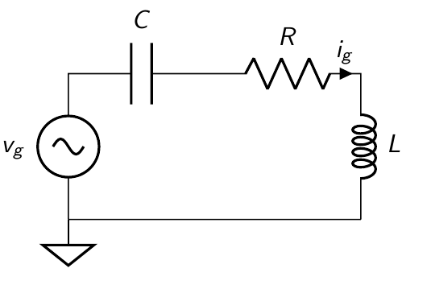
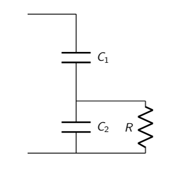

Técnicas de adaptación¶
Adaptador de impedancia.¶
Un adaptador de impedancia, en este caso un el cuadripolo colocado en cascada en el circuito, modifica la resistencia de carga dada \(R_L\) a una un valor dado de entrada o la resistencia de entrada a un valor dado de salida.

Dependiendo del uso, estos valores de entrada o salida se ajustan para lograr distintos objetivos. A continuación se listan los mas frecuentes.
Transferencia de energia óptima: maximiza la transferencia de energia desde la fuente (por ejemplo, una antena) y la carga (por ejemplo, un amplificador).
Cifra de ruido óptima: amplificadores que agreguen la menor cantidad de ruido a una señal mientras realizan la amplificación. Esta depende de la impedancia presentada al dispositivo activo.
Criterio de estabilidad, donde se busca la estabilidad del sistema.
Reflexiones mínimas en las líneas de transmisión: Las reflexiones causan dispersión e interferencia y dan como resultado una impedancia de entrada sensible cuando se mira en la línea de transmisión (cambia con la distancia).
Eficiencia óptima: los amplificadores de potencia obtienen la máxima eficiencia cuando utilizamos la mayor oscilación de voltaje posible en el nodo de salida de los elentos activos (drain o colector), lo que requiere que hagamos coincidir la carga con un valor que satisfaga las condiciones de potencia de carga y oscilación de carga.
Cuadripolo admitancia¶
El circuito de un cuadripolo admitancia se muestra en la figura.

Las ecuaciones del cuadripolo en función de los parametros de admitancia y tensiones del circuito:

Del circuito, se puede calcular la admitacia de entrada dada una admitancia de salida \(y_{L}\):

Del circuito, se puede calcular la admitacia de entrada dada una admitancia de salida \(y_{L}\):
Circuitos resonantes.¶
Ademas de realizar adaptaciones de impedancia, los sistemas de RF precisan filtros pasabanda para atenuar las bandas de frecuencias no deseada, como la de frecuencia imagen. Por su flexibilidad, los circuitos resonantes permiten diseñar filtros pasabanda fijos o variables.
En su forma mas básica, estan formados por elementos reactivos (inductancias y capacitancia). Estos circuitos pueden ser relizados por elementos de constantes concetradas como inductores o capacitores, elementos de constantes distribuidas, como los obtenidos de las líneas transmisión o elementos resonantes como cristales piezoeléctricos.
A continuación, se analizaran circuitos resonantes simples formados por inductancias y capacitancia en paralelo y en serie.
El factor de selectividad es un parámetro que mide la relación entre la energía reactiva que almacena y la energía que disipa durante un ciclo completo de la señal. Un alto factor Q indica una tasa baja de pérdida de energía en relación a la energía almacenada por el resonador. Es un parámetro importante para los osciladores, filtros y otros circuitos sintonizados, pues proporciona una medida de lo selectiva que es su resonancia.
El factor de selectividad entonces se calcula como:
Circuito paralelo¶
En un circuito paralelo conformado por una reactancia y una resistencia, la tensión es un parametro comun para ambos componentes, por lo tanto, las potencias las debemos calcular en función de este.
En un circuito RL:
En un circuito RC:
Circuito serie¶
En un circuito serie conformado por una reactancia y una resistencia, la corriente es un parametro comun para ambos componentes, por lo tanto, las potencias las debemos calcular en función de este.
En un circuito RL:
En un circuito RC:
Comenzamos el analisis empleando el circuito de la figura.

Calcularemos la transferencia del circuito. Vamos a emplear una fuente de corriente y calcular la tensión en el nodo comun.
Calculando para \(S=j\omega\), para el analisis del comporatamiento del circuito en frecuencia:
Donde podemos normalizar la ecuación empleando los terminos \(Q\), ya presentado, y \(\omega_o^2 = \frac{1}{LC}\) como la frecuencia de resonancia.
Podemos remplazar el \(\frac{\omega }{C} = Q R\)
Donde es facil reconocer el que el máximo de transferencia se produce cuando \(\omega^2 = \omega_o^2\) (resonancia).
El factor de selectividad relaciona el \(Q\) con el ancho de banda del circuito mediante la ecuación :
donde \(f_o\) corresponde a la frecuencia de resonancia (\(\omega = 2 \pi f_o\)).
[23]:
import numpy as np
import matplotlib.pyplot as plt
%matplotlib inline
# Ejemplo de respuesta en frecuencia
R = 1
fo = 1
# respuesta vg/ig
def resp(f, fo, Q, R):
return 1j*Q*R/( (2*np.pi)**2 *(f**2 - fo**2) + 1j * Q)
#Defino el vector Frecuencia
freq = np.arange(0.1, 10, 0.01)
for Q in [1,10,100]:
plt.semilogx(freq, abs(resp(freq,fo,Q,R)), label=Q )
plt.legend()
plt.ylabel('vo/ig')
plt.xlabel('frecuencia[Hz]')
plt.grid()
plt.show()
\(Q_o\) (\(Q\) libre) en inductores y capacitores¶
Los inductores y capaciores reales presentan perdidas. Esto quiere decir que a la frecuencia de trabajo, el comportamieto de estos componentes se pude modelizar (de la manera mas simple) como una inductancia o capacitancia, en paralelo con una resistencia de perdidas.

El \(Q_o\) (libre) de un inductor para el modelo paralelo, dada una resistencia de perdida \(r_p\) se calcula como:
Inductores de alto Q para RF¶
Como ejemplo podemos ver como la curva de los inductores de alto Q que comercializa la empresa Johanson (https://www.johansontechnology.com/downloads/johanson-technology-rf-wirewound-chip-inductors.pdf)

El factor de selectividad y la resistencia equivalente serie (ESR)¶
Uno de los parámetros más importantes en la evaluación de un condensador de chip de alta frecuencia es el factor Q, o la resistencia en serie equivalente (ESR) relacionada.
Un condensador sin perdidas presenta un ESR de cero ohmios y sería puramente reactivo sin ningún componente real (resistiva). La corriente que pasa por el capacitor conduciría el voltaje a través exactamente 90 grados en todas las frecuencias.
Los capacitores no son ideales, y siempre exhibirá una cantidad finita de ESR. El ESR varía con la frecuencia de un capacitor dado y es “equivalente” porque su fuente proviene de las características de las estructuras de electrodo conductor y de la estructura dieléctrica aislante. Con el propósito de modelar, el ESR se representa como un elemento parásito de una sola serie. En las últimas décadas, todos los parámetros del condensador se midieron a un estándar de 1 MHz, pero en el mundo de alta frecuencia actual, esto está lejos de ser suficiente. Los valores típicos para un buen condensador de alta frecuencia de un valor dado podrían funcionar en el orden de aproximadamente 0,05 ohmios a 200 MHz, 0,11 ohmios a 900 MHz y 0,14 ohmios a 2000 MHz.
El factor de calidad Q es un número adimensional que es igual a la reactancia del capacitor dividido por la resistencia parásita del capacitor (ESR). El valor de Q cambia mucho con la frecuencia, ya que tanto la reactancia como la resistencia cambian con la frecuencia. La reactancia de un condensador cambia enormemente con la frecuencia o con el valor de capacitancia y, por lo tanto, el valor Q podría variar en gran medida.
http://www.vishay.com/docs/28534/highqdielectric.pdf

\(Q_c\) (\(Q\) cargado) en circuitos RLC paralelos.¶
El \(Q_c\) nos permite conocer el comporatamiento del circuito cuando esta cargado por la impedancia de la fuente y la de la carga.

Del circuito resonante paralelo, en resonancia (donde se anula la componente imaginaria) la resistencia total $:nbsphinx-math:frac{1}{r} = \frac{1}{r_p} + \frac{1}{R_{ext}} $ se calcula como:
donde $R_{ext} = \frac{r_g R_L}{r_g + R_L} $
Entonces, de igual manera multiplicando ambos terminos por \(w_o \cdot L\):
https://www.coilcraft.com/pdfs/Doc945_Inductors_as_RF_Chokes.pdf
http://www.ee.iitm.ac.in/~ani/2011/ee6240/pdf/AN721_AppNote_Matching.pdf
https://www.spelektroniikka.fi/kuvat/schot7.pdf

En un circuito RLC serie en resonancia,
,
\(Q_c\) (\(Q\) cargado) en circuitos RLC serie.¶
El \(Q_o\) (libre) de un inductor para el modelo paralelo, dada una resistencia de perdida \(r_s\) se calcula como:
El \(Q_c\) (cargado) de un inductor para el modelo paralelo, dada una resistencia total \(r = r_s + R_{ext}\) se calcula como \(Q_c = \frac{w_o \cdot L}{r}\), donde \(R_{ext} = r_g + R_L\).
Entonces, dividiendo ambos miembros de la ecuación por \(w_o \cdot L\):
Conversión serie a paralelo¶
Buscaremos la relación entre un circuito resonante serie y un resonante paralelo. Esto será muy util para el diseño y verificación de los filtros, ya que no permitiran agilizar los calculos.

En un circuito resonante paralelo, la impedancia de entrada se calcula como:
Separando la parte real de la parte imaginaria:
En un circuito resonante serie, la impedancia de entrada se calcula como:
Entonces, en resonancia, igualando la parte real de la impedancia :
En resonancia, $Q_o = \frac{R}{X_p} $, entonces $X_p = \frac{R}{Q_o} $. Remplazando resulta:
Sacando $ R_p^2 $ como factor comun y simplificando resulta:
Por lo tanto, en resonancia, igualando la parte imaginaria de la impedancia :
De las ecuaciones, podemos concliuir que para realizar una conversion de serie a paralelo, donde el \(Q_o\) se suele llamar \(Q_m\) (Q de adaptación o ‘matching’), ya que no solo se emplea para las perdidas de los compoentes:
Si el \(Q_m\) es mayor a 10 podemos despreciar el termino \(\frac{1}{Q_m^2}\)
Máxima transferencia \(Q\) constante.¶
Se desea encontrar el valor de \(R_L\) que maximice la tranferencia de energía desde el generado a la carga, teniendo en cuenta que se emplea un circuito sintonizado \(LC\) con perdidas (\(r_p\)).
Dado que el circuito sintonizado esta compuesto por dos componentes, \(L\) y \(C\), para cada valor de \(R_L\) podriamos proponer que el inductor L se escoja para tener un \(Qc\) dado y, luego, se buscará el valor de \(C\) que sintonice a \(w_o\).
Se busca el valor de \(R_L\) para lograr la máxima transferencia de energía desde la fuente para un dado un \(Q_c\).
\(r_p\) se puede escribir en función de \(Q_c\) como:
donde \(R = \frac{R_L \cdot r_g }{ R_L + r_g }\).
Remplazando \(r_p\) en la ecuación de la potencia \(P_{R_L}\):
Buscando el máximo valor de \(P_{R_L}\):
Entonces :
Suponer que \(R_g = 10 \Omega\), \(f_o = 1 MHz\), \(Q_0 = 30\) y \(Q_c = 10\).
[26]:
# Librerias
import numpy as np
import matplotlib.pyplot as plt
%matplotlib inline
# Tamaño del grafico
params = {'figure.figsize': (10, 10)}
plt.rcParams.update(params)
# Funciones para el calculo de potencias
def PRL(ig, RL, rg, Qo, Qc):
wL = (1/Qc - 1/Qo) * (rl * rg)/(rl + rg)
return ig**2 * (RL * rg**2)/(RL + rg)**2 * (1 - Qc/Qo)**2
def PRG(ig, RL, rg, Qo, Qc):
wL = (1/Qc - 1/Qo) * (rl * rg)/(rl + rg)
rp = Qo * wL
return ig**2 / rg / (1/RL +1/rg + 1/rp )**2
def PRP(ig, RL, rg, Qo, Qc):
wL = (1/Qc - 1/Qo) * (rl * rg)/(rl + rg)
rp = Qo * wL
return ig**2 / rp / (1/RL +1/rg + 1/rp )**2
# Datos
rg = 10 # resistencia del generador
fo = 1e6 # Frecuencia de trabajo
Qo = 100 # Q libre
Qc = 10 # Q cargado
# Defino valores para RL
rl = np.arange(1,20,1)
# Calculo las potencias para los valores de rl (estas variables son vectores)
prl = PRL(1, rl, rg, Qo, Qc)
prp = PRP(1, rl, rg, Qo, Qc)
prg = PRG(1, rl, rg, Qo, Qc)
pt = prl + prp
# Grafico el resultado
plt.plot(rl, prl / max(pt), 'b',label = 'PRL')
plt.plot(rl, prp / max(pt), 'y',label = 'Prp')
plt.plot(rl, pt / max(pt), 'g',label = 'Pentregada')
plt.xlabel('RL')
plt.ylabel('P(RL)/max(Pt)')
plt.title('Buscamos Qc={:1.0f}. Valor de rg={:1.1f}ohms, Qo={:1.0f} y RL variando. El eje de abscisas es RL. '.format(Qc,rg,Qo))
plt.grid()
plt.legend()
# Agrego los puntos de
# condición de MAXIMA TRANSFERENCIA DE POTENCIA A Q constante
# Para la maxima potencia a Qcte, (Q=10)
rl = rg
# Calculo wL
wL = (1/Qc - 1/Qo) * (rl * rg)/(rl + rg)
# dado que esta defindo Qo calculo la perdida:
# Qo = rp/wL
rp = Qo * wL
Zin = rl * rp /(rl + rp)
Prl = PRL(1, rl, rg, Qo, Qc)
# Marco en el grafico
plt.plot(rl, Prl / max(pt), 'or')
plt.annotate(s='PRLMAX(Zin={:1.1f})'.format(Zin),xy=(rl,Prl*1.02/ max(pt)), xycoords='data',fontsize=12.0,textcoords='data',ha='center')
plt.annotate(s='PRLMAX(RL={:1.1f})'.format(rl),xy=(rl,Prl*0.94/ max(pt)), xycoords='data',fontsize=12.0,textcoords='data',ha='center')
plt.annotate(s='PRLMAX(rp={:1.1f})'.format(rp),xy=(rl,Prl*0.90/ max(pt)), xycoords='data',fontsize=12.0,textcoords='data',ha='center')
# Condición de MAXIMA TRANSFERENCIA DE POTENCIA
Zin = rg
# Para el calculo de wl usamos la resistencia total
# Calculo wL
rt = (rg * Zin)/(rg + Zin)
wL = (1/Qc) * rt
# dado que esta defindo Qo calculo la perdida:
# Qo = rp/wL
rp = Qo * wL
#1/rl = (1/Zin) - (1/rp)
rl = 1/( (1/Zin) - (1/rp))
Prl = PRL(1, rl, rg, Qo, Qc) / max(pt)
# Marco en el grafico
plt.plot(rl, max(pt)/max(pt), 'or')
plt.annotate(s='Pdisp(Zin={:1.1f})'.format(Zin),xy=(rl,1.02), xycoords='data',fontsize=12.0,textcoords='data',ha='center')
plt.annotate(s='Pdisp(RL={:1.1f})'.format(rl),xy=(rl,0.97), xycoords='data',fontsize=12.0,textcoords='data',ha='center')
plt.annotate(s='Pdisp(rp={:1.1f})'.format(rp),xy=(rl,0.94), xycoords='data',fontsize=12.0,textcoords='data',ha='center')
plt.show()

Se desea que el equipo transmisor, la fuente de corriente, tenga una carga de \(Z_{in} = 50\Omega+j0\Omega\) @ \(2 MHz\) para que esté adaptada, se recurre así al circuito de adaptación mostrado en la figura compuesto por L y C. Suponga que la resistencia de perdida de L es \(r_p = 1\Omega\).
Calcular L y C.
Calcular la potencia en la carga.
Para el cálculo del inductor primero debemos neutralizar el efecto de la capacitancia producida en la antena. Para ello, separamos el inductor en dos inductores conectados en serie, como muestra la figura.
Calculamos \(L_b\) para que neutralice o resuene con la capacidad.
El circuito resultante en la rama es un RL serie en paralelo con el capacitor de adaptación. Es necesario que el circuito serie RL se presente como un circuito paralelo RL, donde R debe tomar valor el valor de \(50 \Omega\). Para ello necesitamos calcular el \(Q_M\) que permita obtener el valor buscado.
A partir de \(Q_M\) calculamos \(L_a\).
Para finalmente obtener el valor de \(L\).
El capacitor que resuena con el \(L'\) equivalente paralelo entonces,
Divisor capacitivo¶
Dado el circuito de la figura, realizaremos el analisis mediante conversiones serie-paralelo.

Buscamos que el circuito presente una capacidad \(C'\), \(R''\) y \(R_L\).
Buscamos los valores de \(C_1\) y \(C_2\).
Empezando desde el paralelo de \(R_L\) y \(C_2\), donde para tener el modelo serie (\(R_L'\) y \(C_2'\)) podemos escribir \(Q_{m1}\) como:
Entonces:
Al modelo serie de \(R_L'\) y \(C_2'\) hay que agregar \(C_1\) (\(C_1\) en serie con \(C_2'\)) :
Despejando \(C_1\):
Ahora tenemos como resultado la serie de \(C\) con \(R_L'\).
Para tener el modelo serie del paralelo de \(R''\) con \(C'\), calculamos \(Q_{m2}\).
Recordando:
Remplanzando \(R_L'\)
Dado que \(Q_{m1}\) es incognita, despejamos:
Conocido \(Q_{m1}\), podemos calcular \(C_2\):
Para calcular \(C_1\), calculamos \(C_2'\) y \(C\):
Entonces:
Los datos son \(C'\), \(R''\) y \(R_L\).
Buscamos los valores de \(C_1\) y \(C_2\).
A partir de :
Podemos llamar \(N^2 =\frac{R_L''}{R_L}\), donde \(N\) será mayor a 1 ya que \(R_L'' > R_L\).
Si ahora \(Q_{m2} > 10\), entonces:
Donde si \(Q_{m1} > 10\), podemos escribir:
Procedimiento de cálculo si \(Q_{m2} > 10\)¶
Volvemos a calcular \(Q_{m1}\):
Siendo \(Q_{m1}\):
Y para calcular \(C_1\):
[ ]: